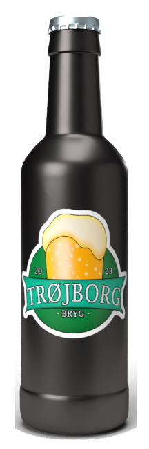
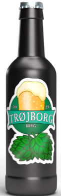
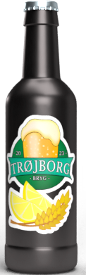
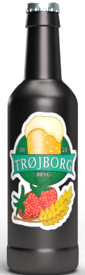
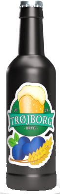
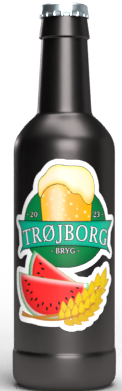

Vores øl
- 
Trøjborg Bryggeri's klassiske pilsner er en forfriskende alkoholfri øl, der kombinerer traditionelt håndværk med en moderne twist. Den gyldne farve og karakteristiske skummende top afslører en velafbalanceret blanding af saftige humler og delikate malte. Med en let og forfriskende smag af citrus og en behagelig bitterhed efterlader denne pilsner en fornemmelse af tilfredshed uden alkoholens påvirkning. Det er den perfekte ledsager til enhver lejlighed, der kræver en klassisk og velsmagende øloplevelse.
- 
Trøjborg Bryggeri's alkoholfrie IPA er en smagsfuld og aromatisk oplevelse for ølentusiaster. Denne IPA byder på en dyb ravfarve og en rig duft af tropiske frugter og citrus. Med en velafbalanceret kombination af saftige humler og maltsødme fremhæves smagen af grapefrugt og passionsfrugt. Trods fraværet af alkohol leverer denne IPA en fuldendt smagsoplevelse, der tilfredsstiller ganen med kompleksitet og dybde. En ideel ledsager til dem, der søger en sanselig og alkoholfri variation af den elskede IPA-stil.
- 
Trøjborg Bryggeri's alkoholfrie Citrusøl er en forfriskende og livlig drik, der vækker sanserne. Med en strålende gul farve og en forfriskende duft af friske citrusfrugter byder denne øl på en eksploderende smagsoplevelse. Den harmoniske balance mellem citrusnoter som citron og lime skaber en let og sprød karakter. Uden alkoholens tyngde tilbyder denne Citrusøl en lys og opkvikkende oplevelse, perfekt til solrige dage eller som et opfriskende alternativ til traditionelle drikkevarer.
- 
Trøjborg Bryggeri's alkoholfrie Jordbærøl er en fristende og forførende drik, der bringer en smag af sommeren til glasset. Med en delikat rosafarve og en intens duft af friske jordbær tilbyder denne øl en lækker og frugtagtig oplevelse. De naturlige sødme og syrlighed fra jordbær kombineres smukt, og den forfriskende smag får ganen til at opleve en mild, naturlig sødme. Denne Jordbærøl er det ideelle valg for dem, der søger en sød, frugtagtig nydelse.
- 
Trøjborg Bryggeri's alkoholfrie Blåbærøl er en fortryllende og saftig drik, der fejrer den forfriskende smag af modne blåbær. Med en dyb lilla farve og en intens aroma af friske blåbær byder denne øl på en harmonisk balance mellem sødme og syrlighed. De naturlige smagsnuancer af blåbær kommer til live, og den forfriskende karakter skaber en uimodståelig drikkeoplevelse. Denne Blåbærøl er det perfekte valg for dem, der ønsker en frugtagtig og lækker nydelse.
- 
Trøjborg Bryggeri's alkoholfrie Vandmelonøl er en forfriskende og sommerlig drik, der hylder den saftige sødme af frisk vandmelon. Med en lyserød farve og en fortryllende duft af solmodne vandmeloner byder denne øl på en let og kølig smagsoplevelse. Den naturlige sødme fra vandmelonen kombineret med en subtil syrlighed skaber en forfriskende drik, perfekt til solrige dage eller som en lækker tørstslukker. Denne Vandmelonøl er det ideelle valg for dem, der ønsker en frugtagtig og forfriskende nydelse.